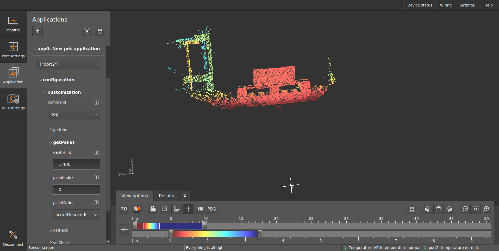
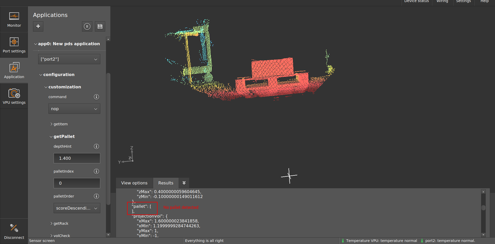
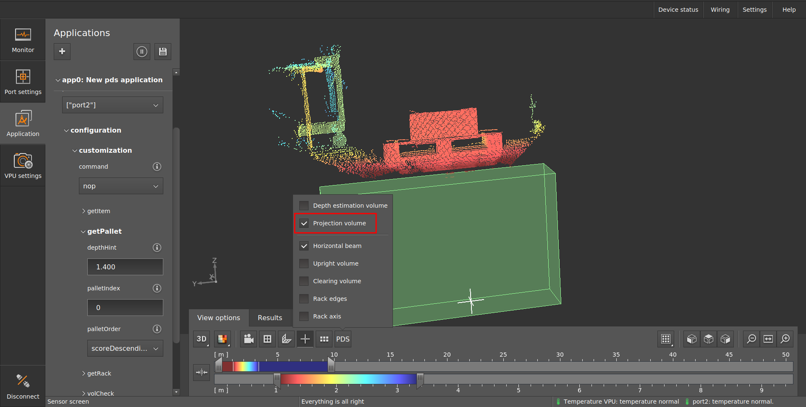
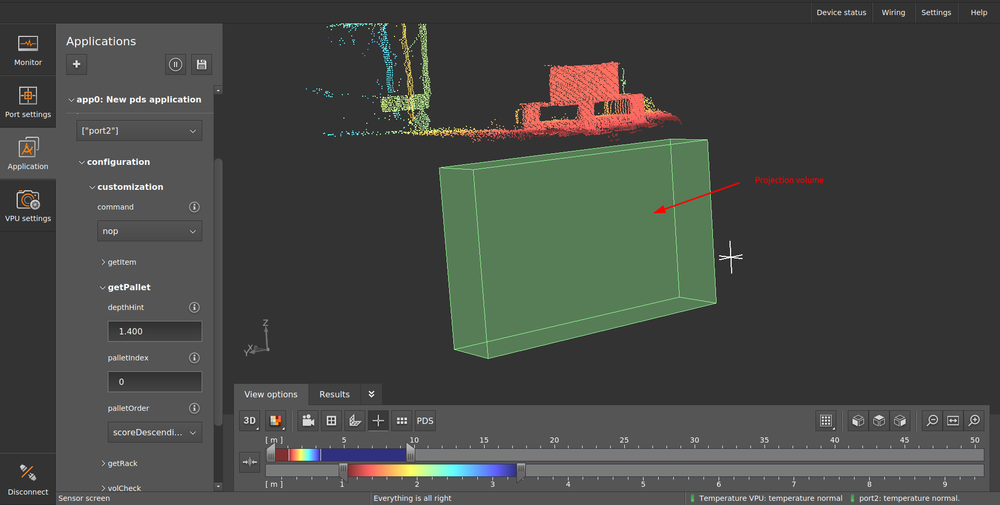
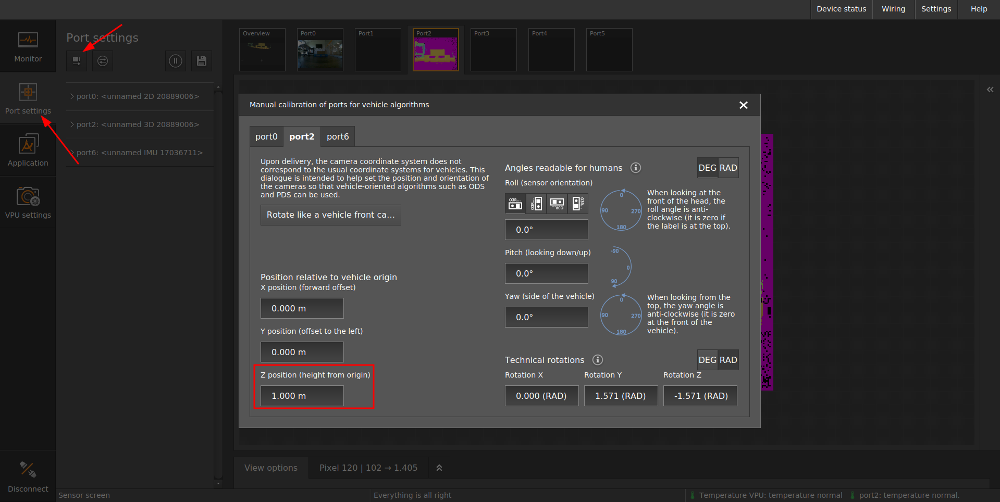
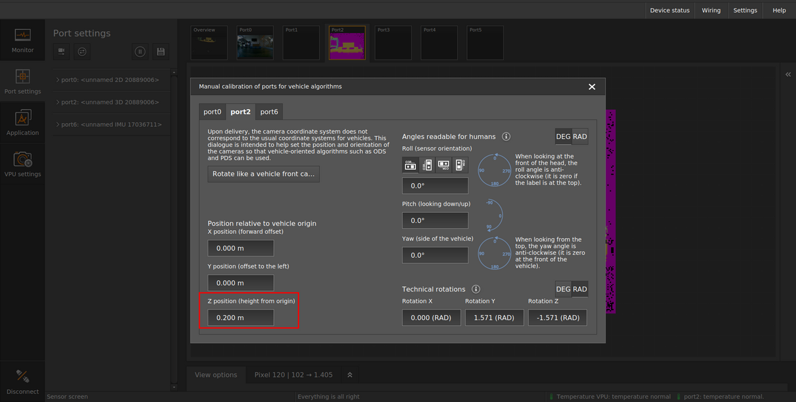
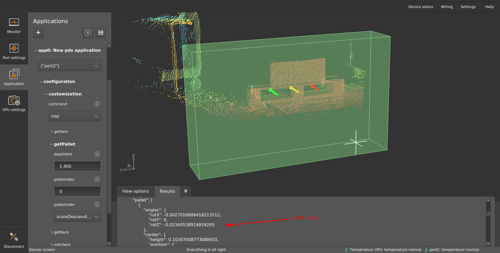

Troubleshooting
This document outlines some ideas of strategies to apply when encountering issues with PDS.
Pallet is not detected
The pallet is clearly in the field of view of the camera, but PDS is not able to detect the position of the pallets?
It could be the calibration.
If the camera is not properly calibrated, the volume in which PDS will look for a pallet will be misplaced.
For example, let’s look at the image below, where a pallet is clearly visible in the camera’s field of view:

When the getPallet command is called, no result is returned.

If we take a closer look and enable the visualization of the projection volume, we can see that the pallet is not in the projection volume. 

When searching for the pallet, PDS is discarding all the pixels that are not in the projection volume. This explains why the pallet is not detected in this case.
Now, let’s take a look at the calibration of the camera: 
We can see that the translation along the Z axis is set at one meter. This would mean that the camera is placed a one meter above the floor. However, the camera in this case is actually placed at only 20 cm above the floor.
The coordinates of the projection volume are set in reference to the calibrated coordinate system. Learn more about the calibration for PDS in our calibration documentation. Changing the camera position in the calibrated coordinate system does not change the position of the projection volume in this same coordinate system. However, it does translate and rotate the point cloud itself, within the coordinate system. This explains why the pallet is now outside of the projection volume.
Now, I can fix this error and set the translation along the Z axis to its real value: 
If it run the getPallet command again, this time I get the proper result. We can see as well that the pallet is not properly inside of the projection volume.
